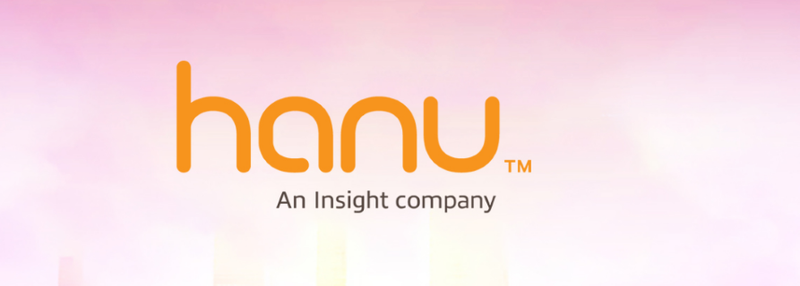
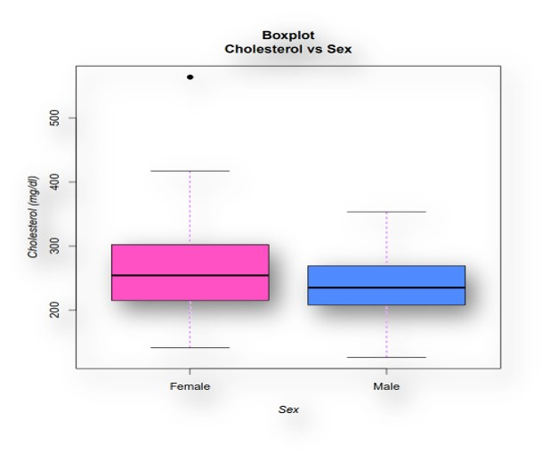
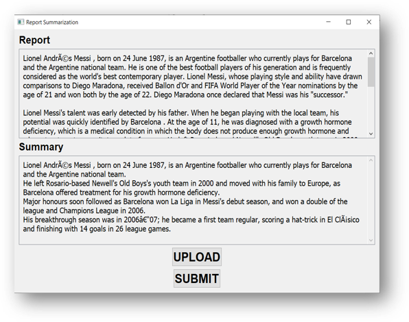

MSc. ADVANCED
COMPUTER SCIENCE (University of Hertfordshire, England)
Experienced software developer and Cloud Engineer with a strong background in Python, C#, .NET technologies,
and AI-driven solutions. Proficient in developing and hosting web applications on cloud platforms,
implementing APIs with various databases, and integrating AI techniques into software systems. Skilled in
data mining, web scraping, and building datasets, with practical experience working with JIRA and Git.
Versatile, client-focused, and valuable for software development, cloud engineering, and AI-enhanced
projects, including prompt engineering roles.
Intro
As a software developer, I am passionate about my work and enjoy working on projects that solve real-world
problems. I have a strong background in Python, CSharp(C#) and .Net Technologies and am versatile enough to
work on both desktop and web applications furthermore, worked on projects that use a variety of languages and
frameworks.
I obtained my postgraduate degree from the University of Hertfordshire in England. During my studies, I have
gained valuable experience in Robotics and Artificial Life. Additionally, I have also learned about the
ethical and legal considerations that developers must take into account.
During my 1.5 years of experience as Cloud Engineer my main role was to develop Web Apps using MVC and deploy
and host them using Azure cloud services especially using Azure WebApps. Alongside this, my role was also
implementing Api’s either from MySQL, Azure SQL, PostgreSQL or any other endpoint provided. This job also
demands me to work on websites like Azure DevOps, and Atlassian JIRA. Directly/face-to-face interactions with
the client and customers help in effortless development moreover, providing them with continuous support,
fulfilling all the roles of an IT professional.
As a software developer, I am passionate about my work and enjoy working on projects that solve real-world
problems. I have a strong background in Python, CSharp(C#) and .Net Technologies and am versatile enough to
work on both desktop and web applications furthermore, worked on projects that use a variety of languages and
frameworks.
Work
Freelancer:Technology and Content Creation
Lead Tech & Content DeveloperJuly, 2023 - Till Date
Expertise in AI and Digital Innovation: As a CTO, Senior Developer, and Content Creator, I
specialize in integrating AI technologies and digital content creation, pushing the boundaries of what's
possible in technology and media.
Diverse Project Portfolio: My work spans a variety of projects, including AI model enhancement,
innovative
digital marketing tools, data mining, and multimedia content creation, showcasing a blend of technical skill
and creative vision.
Focus on User Engagement and Success: Each project is driven by a commitment to delivering
successful
outcomes and engaging user experiences, utilizing advanced tools and techniques.
Technological Proficiency: Proficient in a range of cutting-edge tools like ChatGPT 4, Adobe Premier
Pro, Dalle 3, and Streamlit, ensuring high-quality, innovative solutions across all projects.
Hanu Software Solutions

Cloud Engineer (CEI)May, 2021 - August, 2022
Developed web apps for the client, one for creating and hosting Zoom meetings, and another for users to
join the meetings.
Utilized ASP.NET MVC, .NET Core, SQL Server, HTML, CSS, and JavaScript for web apps.
Created a healthcare records management web app using React.js, .NET APIs, Hapi FHIR Server APIs, and
PostgreSQL.
Integrated Hapi FHIR server for patient records, PDF rendering for health reports, EPIC server for
patient history retrieval.
Designed workflows, forms, views, and project charters with Microsoft Projects Online.
Implemented the project environment with timesheets, governance workflows, and views for effective
project status tracking.
Smart Study Hub
Machine Learning InternJuly, 2020
Regression of CoVid-19 Data using Python
Data mining, web scrapping websites and creating cleaned datasets
FindProperty FindProperty is a real estate platform, similar to UK-based sites like Rightmove and Zoopla, where users
can buy, sell, and rent properties such as homes, flats, and commercial spaces. I contributed to the
development of the platform, primarily using Angular for the front-end, which enabled dynamic, responsive user
interfaces. The platform also incorporated DALL·E for generating interactive media, such as property images
and videos, enhancing the overall user experience with dynamic and personalised content. The use of HTML5 and
CSS3 ensured the platform’s responsiveness across multiple devices. As part of the team, I worked on
implementing search functionalities and optimising the overall user journey, ensuring the platform aligned
with business goals and provided a seamless experience for users.
LocalHouse LocalHouse operates as a property agency platform, where properties are listed directly by the agency. The
platform allows potential buyers and renters to connect with agents efficiently. For this project, I worked on
creating a clean and functional interface using HTML5 and CSS3, ensuring easy navigation and smooth
interactions between users and agents. The focus of this platform was on simplicity and direct communication,
allowing clients to quickly find the necessary property details and contact agents. My role involved enhancing
the user experience, ensuring that the platform was intuitive and easy to navigate.
SmartRent SmartRent is a platform that functions similarly to Airbnb, enabling users to book short-term rental
properties. The platform is designed to provide an efficient and user-friendly experience for both guests and
hosts. I contributed to the project by developing the front-end using HTML5 and CSS3, ensuring the site was
visually appealing and responsive. The platform’s primary features include property listing management,
booking systems, and payment processing. I focused on ensuring smooth navigation and quick access to necessary
information, allowing users to easily book or list properties. The project required effective collaboration
with cross-functional teams to deliver a robust and reliable platform.
The project titled "Transforming Social Media: Development of a Multi-Platform Broadcast Bot" focuses on
creating an innovative solution for seamless communication across multiple social media platforms. By
leveraging browser automation, Python, and natural language processing (NLP), the bot is designed to send
media-rich content, such as text, images, and videos, to diverse audiences efficiently.
The project addresses key challenges such as bulk messaging, real-time translation, and
cross-platform compatibility, allowing users to interact across platforms like WhatsApp, Telegram, and
Instagram. It integrates technologies like Playwright for browser automation and Argos Translate for language
translation, ensuring user-friendly communication regardless of language barriers.
The bot's modular and scalable design also provides robust error handling, making it a reliable tool
for both personal and business use, enhancing modern digital communication practices.lex data in an accessible
and visually engaging manner, enabling users to glean insights effortlessly.
This initiative involves the development of advanced data visualization and analytics dashboards, akin to
PowerBI in functionality and design. The dashboards feature interactive graphs and user-friendly interfaces,
making them highly effective for data interpretation and decision-making. A key aspect of this project is the
integration and analysis of YouTube live stream data, which is utilized to create these comprehensive
dashboards. The aim is to present complex data in an accessible and visually engaging manner, enabling users
to glean insights effortlessly.
This comprehensive project showcases an extensive application of AI in various realms of content creation and
development. Key components include enhancing ChatGPT 4 functionalities, developing AI avatars and images,
utilizing illusion diffusion models for sophisticated visual effects, and converting text into diverse media
formats. Additionally, the project encompasses the creation and management of faceless YouTube channels, AI
speaking avatars, and an AI news anchor, demonstrating a pioneering approach in digital media. These efforts
highlight the fusion of AI with creative content strategies, producing high-quality, engaging, and innovative
content for a range of digital platforms.
Languages/Tools:
Adobe Premier Pro, CapCut, Dalle 3, Pika Labs, ChatGPT 4 + (Bots), Midjourney, Runway ML,
LeonardoAi, Huggingface.io, Narakeet, Elevenlabs, Haygen, Wav2Lip.
This project involves the creation of dynamic e-business cards, revolutionizing traditional networking tools
with a digital twist. Moving beyond standard designs, these business cards are featured as hosted e-cards with
animated QR codes. Users can scan these codes to directly access the card's details online. Each QR code is
uniquely tailored to reflect the business or individual it represents, offering a creative and personalized
approach. This innovative method not only modernizes the business card format but also significantly enhances
user interaction and engagement, creating a lasting impression in professional exchanges.
Languages/Tools:
HTML5, CSS3, JavaScript, Huggingface.co (for QR codes).
Cholesterol levels show how much cholesterol is circulating in your blood. A drastic change in cholesterol
levels leads to heart disease.Cigarette smoking, high blood pressure, and high blood cholesterol are the most
clearly established risk factors that have been identified as being strongly associated with coronary heart
disease. We are currently analysing how the cholesterol level is different for males and females.

Dataset has 303 observations (rows) and 17 variables (columns). This study attempts to evaluate whether
cholesterol level is different for male and female. We ask the
following research question:
Is there a difference in the mean Cholesterol level in Cleveland between Male and Female populations?
The null hypothesis is:
H0: There is no difference in the mean cholesterol level in Cleveland between male and female populations.
Alternative hypothesis is:
H1: There is a difference in the mean cholesterol level in Cleveland between the male and female populations.
Firstly dataset is filtered for necessary outliers. Then from the newly created csv file visualization had
been done to get a clear overview:-
1. Is are research question correct according to the data.
2. Which analysis techique to be used for the final result.
The focus of the project is on Extractive Summary Generation. The system allows users to input files in
various formats, such as .pdf, .docs, or .txt. After receiving the input file, the system processes and cleans
it to extract relevant sentences. To determine the importance of each sentence, a scoring mechanism utilizing
a matrix is employed. The system is designed and deployed using PyQt5, providing a user-friendly graphical
interface for inputting files and viewing the generated summaries. This project aims to create an efficient
and effective way of generating concise summaries from text files, making use of modern technologies for
enhanced user experience and accessibility.

When we initially created this application, there were only a few online apps available, and most of them were
console-based. In contrast, we developed a comprehensive UI-based windows application using Python designer.
This application offers several advantages over its counterparts:
1. It allows users to work seamlessly even when internet services are down, ensuring uninterrupted
access and
usability.
2. There is no need to open any website or remember URLs, making it more convenient and user-friendly.
3. Our application enables users to upload entire papers without any restriction on word count, making
it
highly versatile for different document sizes.
By developing this full UI-based windows application, we aimed to provide users with a more efficient and
robust tool that enhances their workflow and simplifies document handling.
Introducing our groundbreaking web application – your ultimate destination for comprehensive product reviews
across diverse market segments! Seamlessly blending cutting-edge technologies, our platform offers a seamless
and interactive user experience. Imagine a space where you can explore product insights, all meticulously
aggregated and updated in real-time. "REVIEWER"
Harnessing a multi-tiered approach, we've woven together HTML5, CSS, and JavaScript to craft an intuitive and
visually captivating front-end. Our robust Back-End, powered by NodeJs, ensures flawless functionality and
smooth navigation, enhancing your journey on our platform.
What sets us apart is our data aggregation prowess, thanks to Python's efficient web crawling capabilities. We
meticulously extract vital product details from a myriad of online sources, providing you with a holistic
overview that's continuously enriched with up-to-the-minute information.
But that's not all – we've gone above and beyond by integrating Selenium for web browser automation, expanding
the horizon of data collection. Our platform spans three key product categories: Movies/TV Series sourced from
IMDB, Mobile Phones curated from Gadgets NDTV, and Android Apps gleaned from the Google Play Store. This
curated collection forms the heart of our extensive dataset, boasting an impressive range of content – 7 lakh
movies and TV series from IMDB, 10,000 mobile phones from Gadgets NDTV, and 20,000 Android apps from the
Google Play Store.
Efficiency is paramount, and that's why we've employed Python-generated CSV files to optimize data management.
Accessing and manipulating information has never been more streamlined and convenient. Our journey doesn't
stop at data collection; we've put extra effort into crafting a clean, cohesive dataset. Through meticulous
data cleaning and precise formatting, we've ensured that the dataset maintains its accuracy and reliability.
Embark on this thrilling voyage of exploration and revelation. Immerse yourself in the seamless blend of
cutting-edge technology and insightful data, crafting an unmatched user experience. As our platform unfolds,
we extend a heartfelt invitation to discover a realm where comprehensive reviews are just a click away. Step
into the forefront of product exploration – welcome to our web application! Your gateway to informed decisions
and an enriched digital journey beckons.
Languages/Tools:
Python, HTML5, CSS, Selenium, Node.Js, Jupyter, Google Collab, Firebase
I have developed a console-based application utilizing Python, which offers real-time data updates. The
application employs advanced data mining and web crawling techniques to extract live information from IMDB,
ensuring users have access to the most current content. By seamlessly integrating Python's capabilities, the
application guarantees efficient data collection and processing. This console-based solution allows users to
interact seamlessly with real-time data feeds, enabling them to make informed decisions or stay updated with
entertainment trends. The application's reliance on IMDB's live data calls ensures a dynamic and precise data
stream, enhancing its reliability and accuracy.
The application comprises three distinctive sections, each catering to specific user needs. The
"Search by Name" section enables users to input keywords such as movie titles, actors, or TV series names,
ensuring efficient retrieval of pertinent information. The "Search by Actor" function appeals to users
interested in exploring an actor's body of work, presenting comprehensive details of their filmography and
contributions to the entertainment industry. The "Top Rated" section curates the most highly acclaimed content
based on user reviews and ratings, guiding users toward quality entertainment options. This segmented
structure facilitates effortless exploration, discovery, and access to desired content, contributing to a
user-friendly experience.
Basic school management system having records of student and
also containing library database. Different Departments of school
have different access level; Java, HTML, CSS.